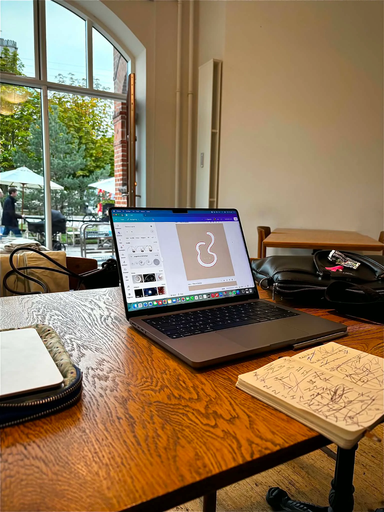
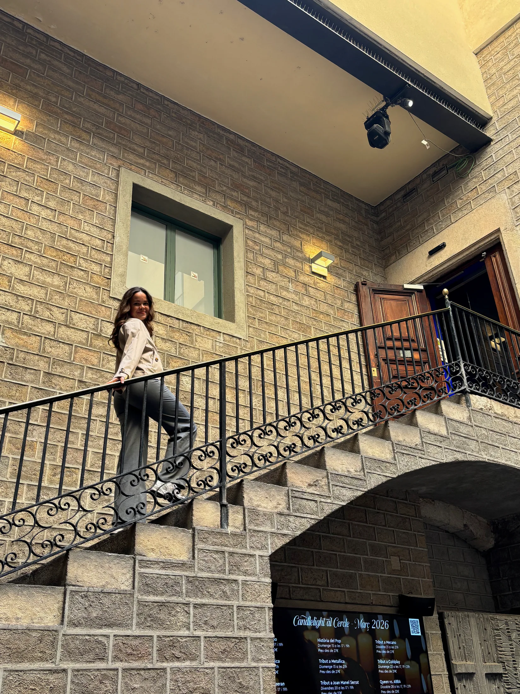
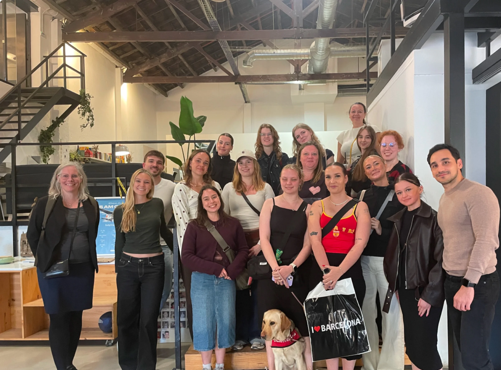
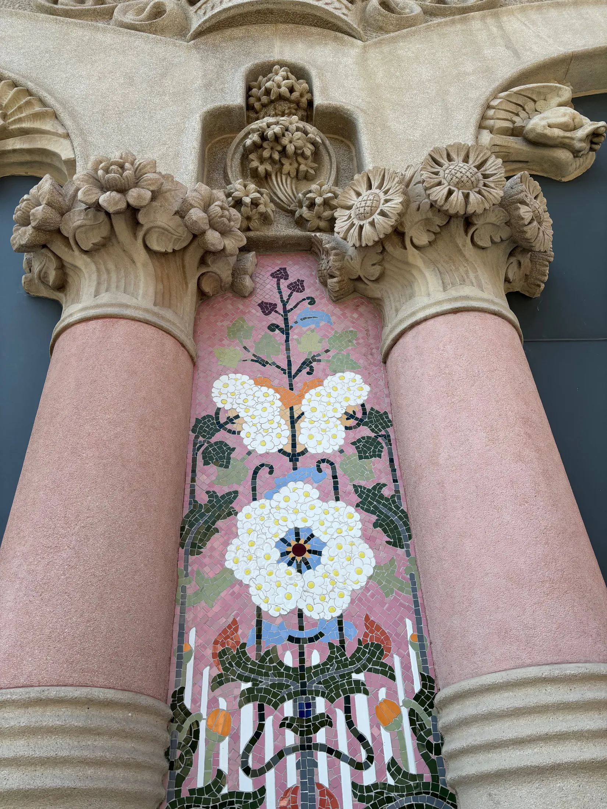
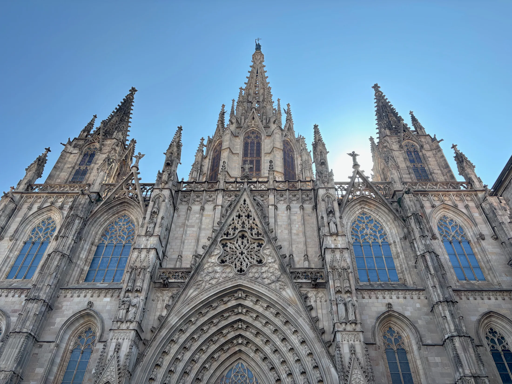
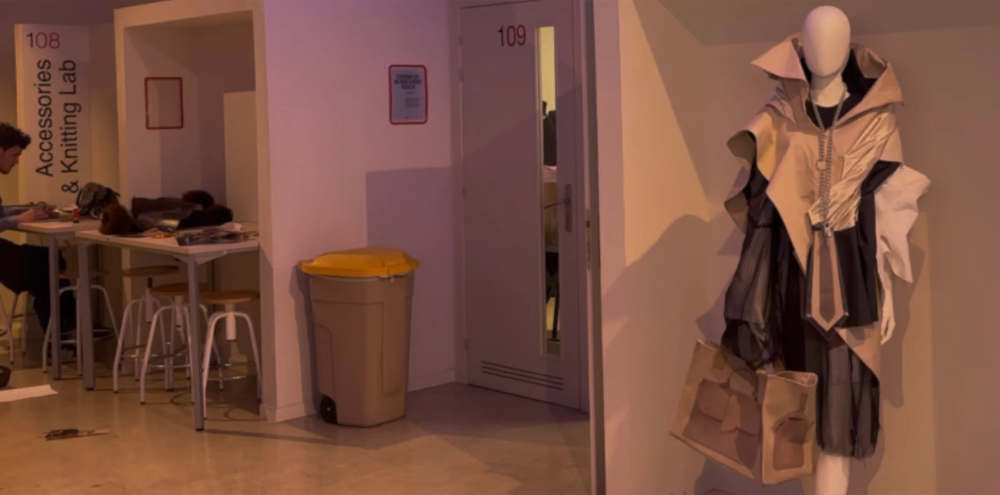
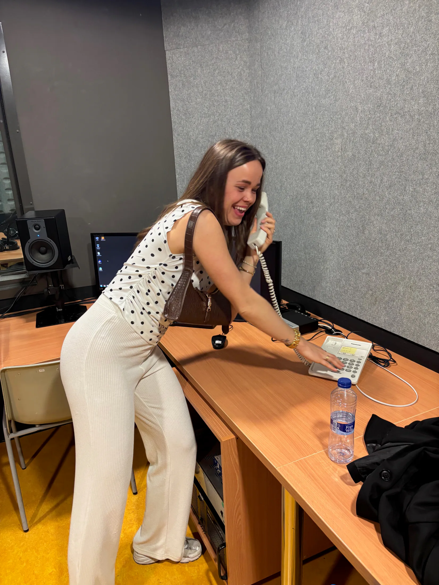
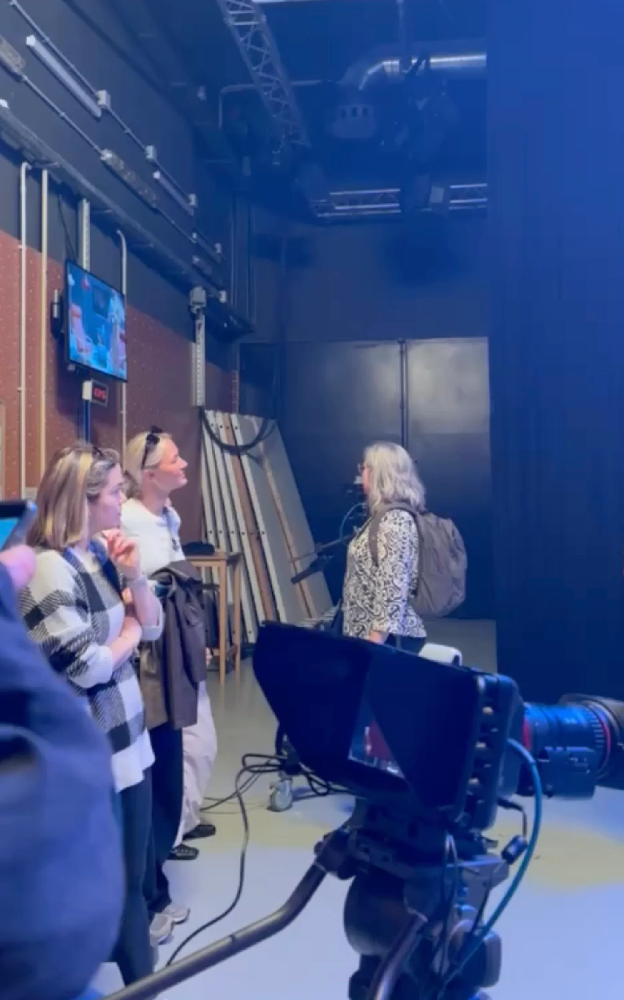

Why multimedia design?
My journey into multimediadesign and the creative path that feels right for me.
01Finding my path
At first, I thought about studying Design Technology, but since it's only located in Herning and Kolding, I decided against it, since I really enjoy living in Aarhus.
Instead, I found Multimedia Design, which turned out to be a great fit for me. I love that it combines creativity and business, and that there's an opportunity to continue with a top-up later. I study at IBA Erhvervsakademi Kolding and it's an online class.

02What inspires me?
I´m curious by nature and enjoy learning a little bit of everything. I love having variety in what I do and being able to switch between creative ideas, design and more practical tasks. That’s what keeps me motivated.
I also find a lot of inspiration outside my screen. Travelling, experiencing different cultures and discovering new places often gives me new perspectives and ideas that I bring into my creative work.
03Study trip
Below are some pictures from my trip to Barcelona with my school. Seven of us were from the online class, while the rest were from the in-person class.


04Visits
During our study trip, we visited a creative company, Firma and gained insight into how they develop ideas and create solutions for their clients.
We also visited two different schools: IED Barcelona, a design school offering a variety of creative disciplines, and TecnoCampus, where we explored media studios, technology and different approaches to digital learning.




